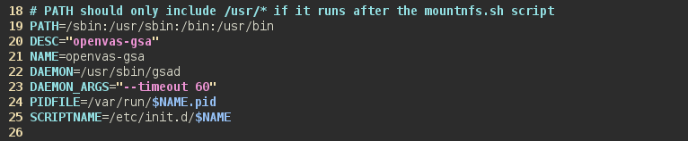
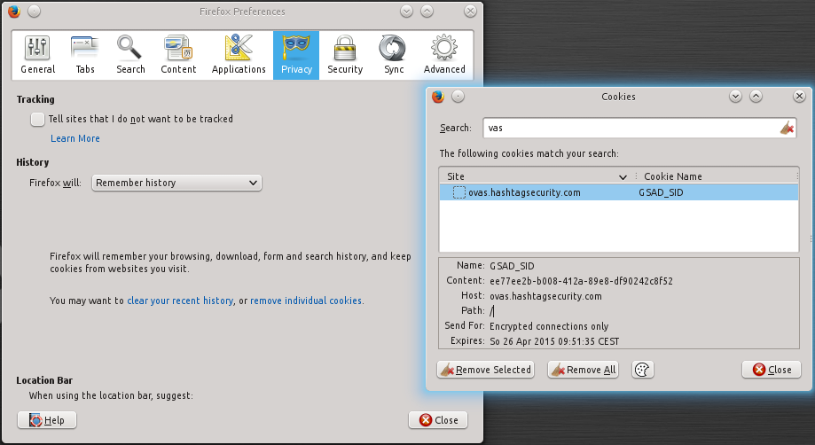

Change OpenVAS Session Time

Here is a small piece of knowledge that prevented me from going nuts. Set you OpenVAS session expiry time before it drives you crazy!
Openvas is a great vulnerability scanner, but the default session expiry time is set to 15 minutes, which is just plain annoying when you're running a scan and want to check in on it every know and then.

Set Session Expire Time in GreenboneSecurityAssistant (GSA) to 60 Minutes by adjusting the init script. Depending on your installation and linux distro this file might be named different.
sudo vi /etc/init.d/openvas-gsa
#Look for the Daemon startup parameters and add
--timeout 60

Restart the service and login again in the web interface. Check the cookie for it's expiration time.
You can check your cookies in Firefox from the Privacy tab in the Settings by clicking on the "remove individual cookies" link and searching for GSA.

Check the expiry date, it should have a difference of 60 minutes from your login time.